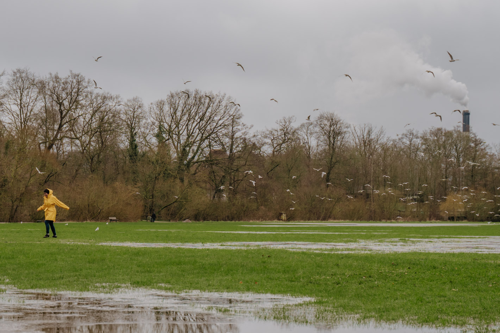

Kano og kajak
En tur i kajak eller kano en sommerdag er en rigtig god oplevelse,
hvor du får masser af luft og motion og kan se landskabet og byen fra en helt anden vinkel.
Du kan sejle på både Odense Å og Odense Fjord.
På Odense Å er det, afhængigt af årstiden, muligt at sejle en strækning på 15 km(hele året),
22 km (1.juni til 1. april) eller 35 km (vinter).
Sejladsbestemmelser
Offentlig sejlads er kun tilladt på Odense Å og kun inden for bestemte perioder,
afhængig af hvilken strækningen af åen man ønsker at sejle på:
Hele året må man sejle med robåede, kanoer og kajakker på strækningen
fra Erik Bøghs Sti i Fruens Bøge til udløbet ved Seden Strand.
Fra 1. juni til 1. april må man sejle robåde,
kanoer og kajakker på strækningen Brogårdsvej i Bellinge til Erik Bøghs Sti i Fruens Bøge.
Fra 1. november til 1. april må man sejle med robåde,
kanoer og kajakker på strækningen fra Nr. Broby til Brogårdsvej (vintersejlads).
Se sejladsbestemmelserne(https://drift.kortinfo.net/map.aspx?site=odense&page=kortopslag&bbox=571714.1328183417;6123097.006839019;599750.4171134054;6145804.848152037&background=2048&themes=13048) på Odense Kommunes webkort-tjeneste Kortinfo (det tager et øjeblik at åbne kortet)
Start- og slutsteder, overbæringer og rastepladser ved Odense Å
Her kan du se forslag til steder, hvor du kan starte eller slutte din kano- eller kajaktur.
Det er steder, hvor der er en bro eller en brink, gode offentlige adgangsforhold og p-plads,
og der er ligeledes forslag til rastepladser. Ved Dalum Papirfabrik,
Munke Mose og Ejby Møller er det nødvendigt at bære kanoen eller kajakken en kort strækning.
Få overblikket på kortet herunder, og læs mere om de enkelte pladser på undersiderne.